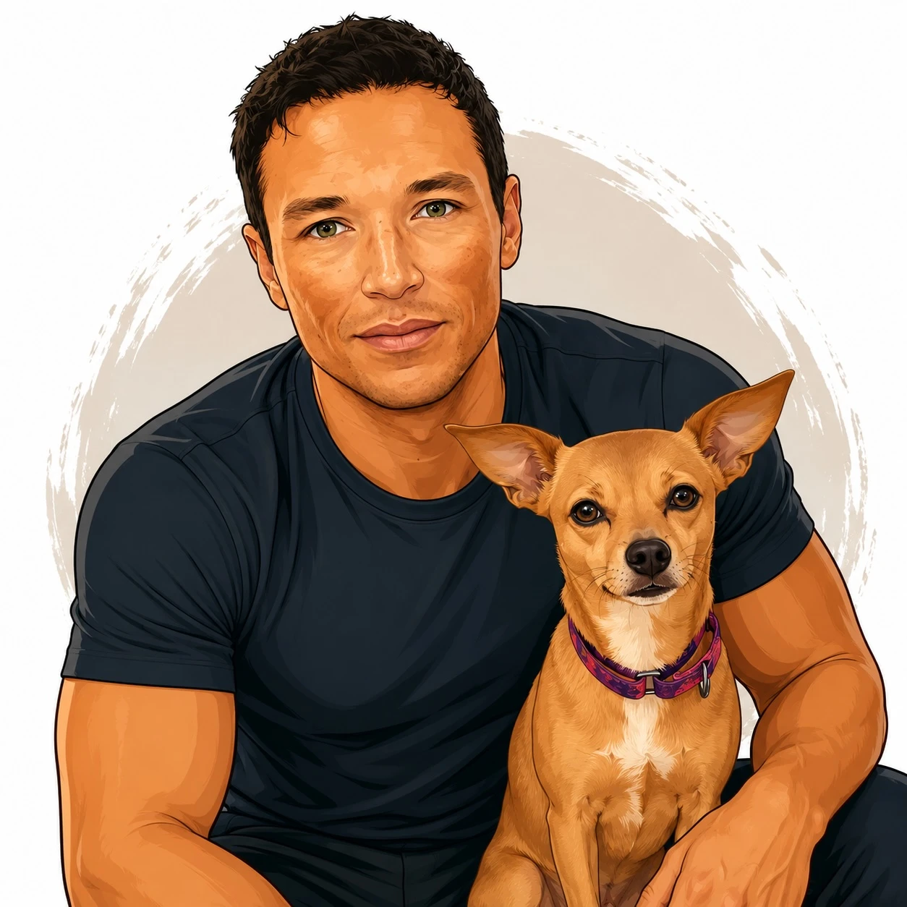

In-Home Personal Training
Train in a familiar environment with a plan that fits your space, schedule, and equipment. Ideal for people who want privacy, convenience, and a calm coaching experience.
Personal Training in St. Petersburg, Florida
Calm, personalized coaching for beginners, adults 40+, and active people who want to move better, feel stronger, and stay confident for years to come.
A Better Way To Train
Most people do not need a louder gym, a more complicated program, or a trainer who pushes intensity before understanding the person in front of them. They need a clear plan, a coach they trust, and workouts that build capacity without creating unnecessary stress.
Cam Meyer Fitness is built around real life. The goal is not to chase punishment or perfection. The goal is to help you build strength, improve mobility, reduce hesitation around movement, and feel capable in the moments that matter: walks along the waterfront, travel, family time, hobbies, sports, errands, and the simple confidence of knowing your body can do more.

Meet Cam
Working with a personal trainer should feel encouraging, professional, and human. Cam brings a calm, attentive coaching style to every session, helping clients feel comfortable while still making measurable progress.
That means your program starts with your body, your history, your schedule, and your goals. If you are new to training, you will build a consistent routine without feeling judged. If you are returning after time away, you will rebuild safely. If you want to stay strong as you age, each session will support the strength, balance, and mobility that help preserve independence.
The Philosophy
Carrying groceries without pain.
Getting up from the floor with confidence.
Walking farther without worrying about fatigue.
Traveling, golfing, gardening, or playing pickleball without feeling limited.
Coaching Options
Sessions are practical, focused, and adapted to your comfort level. Cam can coach in homes, condo fitness centers, local training spaces, and online when a flexible option makes the most sense.
Train in a familiar environment with a plan that fits your space, schedule, and equipment. Ideal for people who want privacy, convenience, and a calm coaching experience.
Perfect for St. Pete residents who have access to a building fitness center but want guidance, structure, and confidence using the equipment correctly.
Build usable strength while improving range of motion, balance, control, and confidence in everyday movement patterns.
Smart training for adults who want to stay active, independent, and resilient through every decade of life.
Learn how to train safely and consistently without overwhelm. Each session gives you more confidence in your body and your routine.
When travel, schedule, or distance gets in the way, online coaching can help you stay consistent with clear programming and accountability.
Built for the St. Pete lifestyle
St. Petersburg is an active place to live. Waterfront walks, pickleball, beach days, boating, golf, cycling, markets, travel, and time outdoors are all easier to enjoy when your body feels strong and dependable.
Cam works with clients throughout the St. Petersburg area, including Downtown St. Pete, Old Northeast, Snell Isle, Shore Acres, Gulfport, Pasadena, Tierra Verde, Treasure Island, and St. Pete Beach.
The point of training is not to live in the gym. The point is to live better outside of it.
What To Expect
The first step is simple: talk through your goals, move through a shortened workout, and decide whether the coaching relationship feels right.
Cam listens first. You will discuss your training history, current limitations, schedule, confidence level, and what you want fitness to change in daily life.
This is not a test. It is a low-pressure way to understand how you move, where you feel strong, and where your program should begin.
Your plan is built around sustainable progress: strength, mobility, confidence, accountability, and a routine you can actually maintain.
Client Results
“After more than six months working with Cam, my joint pain is nearly gone, and I feel stronger than I have in years.”Arthur V., 55
Feel comfortable training, asking questions, and learning how your body works.
Improve the strength, balance, and mobility you use in everyday life.
Build habits that are realistic enough to last beyond a short burst of motivation.
Questions
If you have felt unsure about hiring a trainer, that is normal. These answers are here to reduce the friction before you reach out.
Yes. Beginners are welcome. My coaching starts at your current level and builds from there.
Yes. Many clients want strength, balance, mobility, independence, and confidence as they get older and we work together to make that happen.
Yes. Condo fitness centers are often a great fit because they are convenient and familiar. I am happy to provide a Certificate of Insurance (COI) if needed.
Cam can adapt sessions around your history and comfort level. Coaching is not a replacement for medical care, but it can be designed thoughtfully around what your body needs.
Many clients start with one to three sessions per week depending on goals, schedule, and current fitness level.
No. Cam can work with available equipment or build sessions around bodyweight, bands, dumbbells, machines, or a full gym setup.
Cam serves clients throughout the St. Petersburg area, including Downtown St. Pete, Old Northeast, Snell Isle, Shore Acres, and nearby beach communities.
Ready when you are
Reach out to schedule an initial conversation with Cam. You will talk through your goals, ask questions, and decide on the next best step without pressure.
Personal training in St. Petersburg, Florida.
Schedule a Conversation